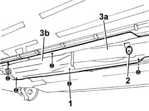
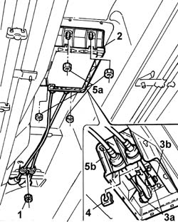

2125C22 GEAR control LEVER and SUPPORT - R.R.
- Path
- Procedures > 21 GEARBOX > 2125 manual gearbox external controls > 2125C manual gearbox external control (cables) > 2125C22 GEAR control LEVER and SUPPORT - R.R.
- Kind
- repair procedure (removal / refitting; the operation number is the code)
- Applies to
- engines: 2.0 TB, 2.4 20V, 2.4 JTD 10V, 2.4 JTD 20V; all production periods
- Interactive page
- https://sloeber94.github.io/elrnDB-lThss/en/#/108807
Applies to: engines: 2.0 TB, 2.4 20V, 2.4 JTD 10V, 2.4 JTD 20V; all production periods
 Removing
Removing
 Refitting
Refitting- Position the vehicle on a lift.
See in Op. 2125C26 Lever/grip TRIM - R.R. for versions with reverse gear engagement device
Applies to: engines: 2.4 20V; all production periods
See in Op. 7055B54 PROTECTION/GUARD under engine - R.R.
See in Op. 1076B68 EXHAUST PIPE FLEXIBLE SECTION - R.R.
See in Op. 1076B18 rigid section of exhaust pipe between catalytic converter and silencer - r + r
Applies to: engines: 2.4 JTD 10V, 2.4 JTD 20V; all production periods
Applies to: engines: 2.0 TB; all production periods
See in Op. 1076B70 EXHAUST PIPE BETWEEN PRECATALYZER AND CATALYZER - R.R.
-
See in Op. 1080B62 CATALYTIC CONVERTER - R.R.
-
Applies to: engines: 2.0 TB, 2.4 20V, 2.4 JTD 10V, 2.4 JTD 20V; all production periods
- Raise the lift.
1. Undo the retaining nuts.
2. Remove the side flexible mounting supporting the exhaust pipe.
3. Remove the front heat shield (3a) and the centre one (3b) for the exhaust pipe.

Applies to: engines: 2.0 TB, 2.4 20V, 2.4 JTD 10V, 2.4 JTD 20V; all production periods
1. Undo the nut fixing the front bracket for the flexible cables to the bodyshell.
2. Remove the protective cover working on the fastening springs.
3. Release the ends (3a) of the selector and engagement cables from the lever and from the idler by pressing the tabs (3b).
4. Remove the fastening springs and release the two flexible cables from the mounting.
5. Undo the fixing nuts (5a) and remove the gear lever support (5b).

Applies to: engines: 2.0 TB, 2.4 20V, 2.4 JTD 10V, 2.4 JTD 20V; all production periods
Refitting
Removing- Position the gear lever support complete with idler.
- Tighten the bolts fixing the support to the bodyshell to torque.
 | Value - daNm | Fastening | Component | Ø |
|---|---|---|---|---|
. | 1.7 | Bolt | MANUAL GEARBOX LEVER SUPPORT (F) | M8 |
- Fit the ends of the selector and engagement cables on the lever and on the idler.
- Fit the fastening springs for the two flexible cables on the support.
- Fit the protective cover in the housing on the support.
- Tighten the nut fixing the mounting bracket for the flexible cables to the bodyshell.
- Fit the front heat shield and tighten the fixing nuts.
Applies to: engines: 2.4 JTD 10V, 2.4 JTD 20V; all production periods
Applies to: engines: 2.4 20V; all production periods
See in Op. 1076B18 rigid section of exhaust pipe between catalytic converter and silencer - r + r
Applies to: engines: 2.0 TB; all production periods
See in Op. 1080B62 CATALYTIC CONVERTER - R.R.
-
See in Op. 1076B70 EXHAUST PIPE BETWEEN PRECATALYZER AND CATALYZER - R.R.
-
Applies to: engines: 2.0 TB, 2.4 20V, 2.4 JTD 10V, 2.4 JTD 20V; all production periods
See in Op. 2125C26 Lever/grip TRIM - R.R. for versions with reverse gear engagement device
- Remove the vehicle from the lift.
Topics linked from this page (7)
- 1076B18 rigid section of exhaust pipe between catalytic converter and silencer - r + r
- 1076B68 EXHAUST PIPE FLEXIBLE SECTION - R.R.
- 1076B70 EXHAUST PIPE BETWEEN PRECATALYZER AND CATALYZER - R.R.
- 1080B62 CATALYTIC CONVERTER - R.R.
- 1080B62 CATALYTIC CONVERTER - R.R.
- 2125C26 Lever/grip TRIM - R.R. for versions with reverse gear engagement device
- 7055B54 PROTECTION/GUARD under engine - R.R.